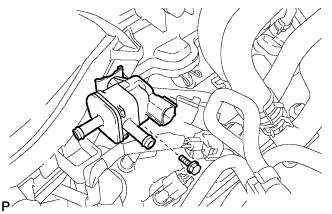

КЛАПАН ПРОДУВКИ АДСОРБЕРА > СНЯТИЕ |
| 1. СНИМИТЕ ДЕКОРАТИВНУЮ КРЫШКУ V-ОБРАЗНОГО ДВИГАТЕЛЯ |
 |
Поднимите переднюю часть декоративной крышки V-образного двигателя, чтобы открепить 2 штифта. Затем снимите 2 крюка декоративной крышки V-образного двигателя с кронштейна, чтобы снять декоративную крышку V-образного двигателя.
| *1 | Штифт |
| *2 | Крюк |
| 2. СНИМИТЕ ЭЛЕКТРОВАКУУМНЫЙ КЛАПАН ПРОДУВКИ |
Отсоедините разъем электровакуумного клапана продувки (VSV).
Отсоедините 2 продувочных шланга.
|  |
Выверните болт и снимите электровакуумный клапан продувки.